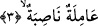

2. O gün bir takım yüzler zelildir,
Bu cümle yukardaki teşvik sorusundan kaynaklanan ve akla gelen bir soruya cevap
teşkil etmek üzere bir başlangıç cümlesidir. O halde biz bu akla gelebilecek soruyu da
takdir ederek ifâdeyi açalım: Sanki Peygamber (s.a.) Efendimiz tarafından burada şöyle
denmektedir. O ğaşiye’nin ne olduğu hakkında bana herhangi bir haber gelmiş değildir.
İşte bu ifâde üzerine Peygamber (s.a.) Efendimiz’e âdetâ bu ikinci âyetle cevap verilmiş
olmakta ve “o günün bir takım yüzlerin zelil olacağı” haber verilmektedir. Bu âyet-i
kerimede yer alan “yevmeizin/o gün” ifâdesi arka arkaya üç haberin zarfıdır. Buna göre
burada âdetâ şöyle denmektedir; bu musîbetler insanları kuşattığı zaman bir takım yüzler
zelildirler.
Âyette geçen “hâşia” kelimesinin masdarı olan huşû’, hudû’, tevâzû’, tetamun hep aynı
mânâya gelmektedirler. Bütün bu kelimelerle kasdedilen insanın başına gelen zillet,
rezillik, rüsvaylık ve hakir oluştur.
Şu halde bu âyetin başında yer alan “vücûh” mübtedâ (özne)dir. Mübtedâ’nın mârife
olması temel kuraldır. Burada ise nekre gelmiştir ancak burada mübtedâ’nın nekre
gelmesinde -kural bakımından- herhangi bir sakınca yoktur. Çünkü nekre kelime çeşit
bildirme durumunda geldiğinde mübtedâ olabilir. Hâşia kelimesi ise bu mübtedâ’nın
haberidir.
Şeyh Fahrettin Râzî (r.h.) nekre olan “vücûh” kelimesinin mübtedâ olmasını ifâdenin
“ashabu vücuh” şeklinde olmasıyla açıklıyor ve diyor. Huşu, zillet insanın yüzünde
ortaya çıktığı için kelimenin başındaki “muzaf” hazfedilmiş ve muzafun ileyh olan
“vücuh/yüzler” onun yerine getirilmiştir. Biz zilletin insanın yüzünde belli olduğunu
söyledik. Çünkü zillet böbürlenmek anlamına gelen tekebbürün zıddı bir kavramdır.
Böbürlenme ise insanın başında, beyninde oluşan bir olgudur.
Bu âyet-i kerimede zikredilen “yüz sâhipleri”nden maksad kâfirlerdir. Bunun kâfirler
olduğunu âyetin aşağıya doğru akışından ve bu kimselerin nitelenmelerinden anlıyoruz.
3. Durmadan çalışır, (fakat boşuna) yorulur,
Bu iki kelime yukarda geçen vücuh/yüzler mübtedâsının ayrı ayrı iki haberidir. Çünkü
yüzlerden maksad yüzlerin sâhipleridir.
Âyet-i kerimede yer alan “nâsıbe” kelimesinin kökü olan “nasab” yorgunluk demektir.
Nasıbe ise yorgun anlamına gelir. Şimdi bu açıklamalardan sonra âyetin mânâsı: O gün
birtakım insanlar vardırki çok ağır ve meşakkatli işler yaparlar. Bu işleri yaparken